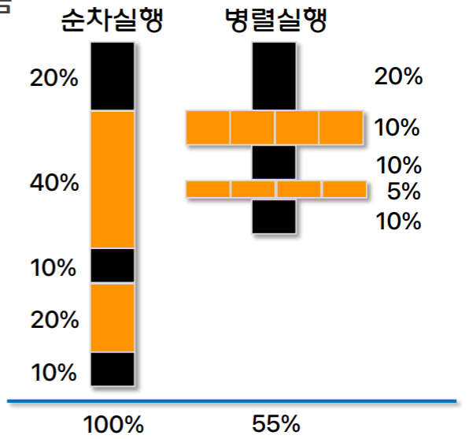
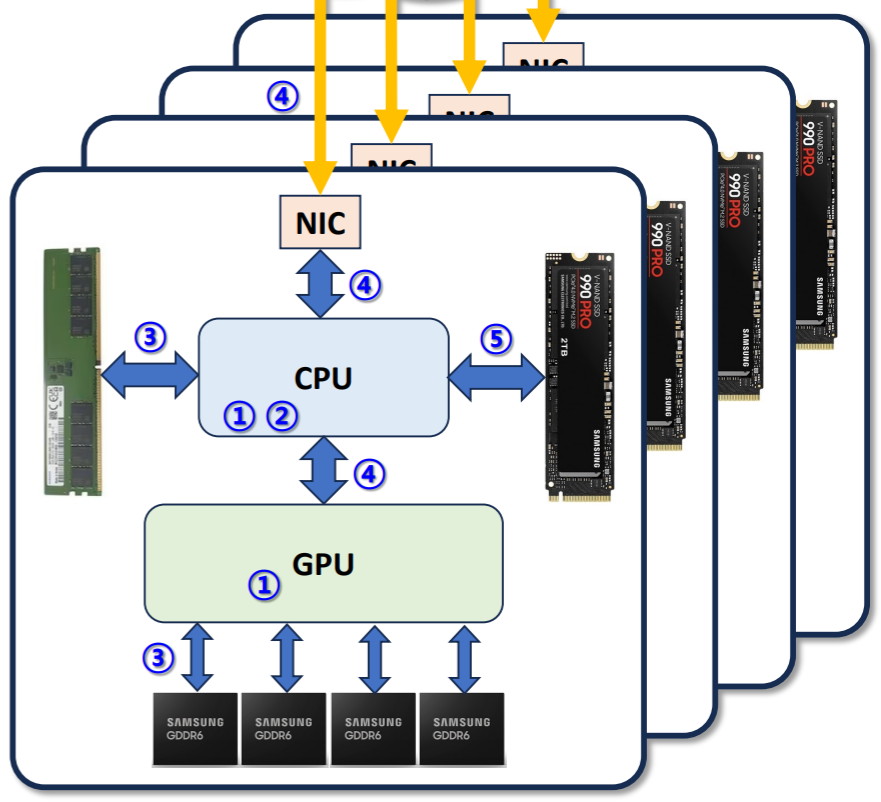

서울대학교 컴퓨터공학과 이재진 교수님의 "확장형 고성능 컴퓨팅" 강의를 필기한 내용입니다.
병렬 vs 분산 차이
- 병렬처리 (Parallel processing): 한 군데에 있는 데이터를 여럿이서 처리
- 상호 연결되어 있는 processor 들을 동시에 사용
- 분산처리 (Distributed computing): 데이터가 산개되어있음
- 연결되어있는 node 들을 동시에 사용
Research trend: Accelerator, Heterogeneous computing
- 가속기 (Accelerator (Arch)): CPU 는 general-purpose, 특정 작업만을 빠르게 실행하는 HW 는 accelerator 라고 불림
- 보통 단순 작업을 수행하는 processor 가 다량으로 들어가있는 형태
- GPU 나 FPGA 가 여기에 속함
- 이종 컴퓨터 시스템 (Heterogeneous computing): 서로 다른 architecture 를 갖는 시스템들을 엮어 연산하는 것
- 이건 일반적으로는 한 시스템 (가령, CPU) 의 메모리에서 에서 다른 시스템 (가령, GPU) 의 메모리로 데이터를 옮긴다음
- 이놈이 처리를 하고
- 그 결과를 반대방향을 memory copy 하는 순서로 이루어진다.
- 이때 이 copy 하는 기간에도 노는놈 없이 굴리기 위해 Communication-computation overlapping 을 한다.
- 즉, communication 하는 동안 computation 하기
- 이건 Latency hiding 의 기본 원리라고 할 수 있다.
- 연구 트랜드는
- 어떻게 이종간 컴퓨팅을 잘 할 것이냐
- performance, power (+ energy), ease of programming 등
- 이건 결국에는 accelerator computing 을 어떻게 잘 할 수 있을 것이냐와 동일하다.
- 결국에는 서로 다른 CPU, accelerator 들을 통합하는 것이 이종컴퓨팅이기 때문.
- 어떻게 이종간 컴퓨팅을 잘 할 것이냐
Supercomputer
- Supercomputer 별거 없다: 상위 500개의 컴퓨팅 시스템 (TOP500) 을 일컫는 말이다.
- 분산컴퓨팅은 취급안한다.
- 목표는 wall clock 시간을 줄이는 것
- 이때 사용하는 benchmark 는 HPL 이고,
- 메트릭은 FLOPS (초당 실수 연산 횟수) 이다.
- Supercomputer 의 기술들이 점점 desktop, mobile 로 내려오는 형태를 띈다.
- Supercomputer 의 성능은 대략 1.2 년마다 두배가 되고 energy 는 2.2년마다 두배 감소한다.
- 반면 server 는 2.4년, GPU 는 대략 2.6년마다 성능이 두배가 된다.
- 즉, supercomputer 와 server 의 발전 gap 을 좁혀야 한다.
- 반면에 GREEN500 라는 것도 있다: 에너지 사용량 상위 500개
- 이건 동일하게 HPL 을 사용하여 benchmark 하고,
- 단위는 FLOPS per WATT 이다.
- HPC: 일반적인 computer 보다 훨씬 더 강력한 성능의 machine 들을 통합하여 거대한 문제를 푸는 방식
- Cluster: 소형 컴퓨터들이 빠른 네트워크로 연결되어 하나의 컴퓨터처럼 움직이는 것
- Mainframe: 하나의 rack 정도의 크기인 매우 고성능의 machine
- Cloud: 필요한 자원을 바로 사용, 사용한 만큼 돈을 냄, 웹을 통한 접근
Wall clock, Speedup, Efficiency
- 일단 supercomputer, HPC 에서의 목표가 되는 Wall clock time 는 실행시간을 일컫는다.
- Speedup: 병렬처리 시간 대비 순차 실행 시간 비율
- : 순차실행했을 때, 전체 시간 중 병렬실행이 불가능한 (= 순차실행만 가능한) 시간의 비율
- 이때 Speedup 는 다음과 같다.
- 는 processor 의 개수이다.
- 위 수식을 좀 뜯어보면
- 은 그냥 순차 시간이고
- 은 병렬 가능 시간인데, 이것을 로 나눈다는 것은 결국에는 이 시간에 대해 병렬처리한 시간을 구하겠다는 의미
- 즉, 위 수식에서 분모의 은 전체를 순차실행했을 때의 시간 (baseline) 을 의미하고, 분자는 부분적으로 병렬실행할 수 있는 부분을 최대한 병렬실행했을 때의 시간이므로 가 된다.
- 이 작아질수록 이 값은 커지기 때문에, 병렬처리를 해서 얼마나 빨라지는지 (Speedup) 에 대한 지표가 되는 것.
- 언어적으로 이해해 보자면, 이 값은 “병렬실행하지 않았을 때 시간이 몇 배나 뛸것인지” (혹은 반대로 “병렬실행하면 몇 배나 빨라질 것인지”) 로 생각할 수 있다.
- 따라서 ideal 한 상황은 값이 가 될 때이다.
- 즉, 코드의 모든 부분이 병렬 실행되어서 병렬 실행을 비활성화했을 때 processor 의 개수만큼이나 시간이 늘어나게 되는 상황.
- 그리고 Efficiency 는
- 로 구한다.
- 저 에서 ideal case 는 이 값이 가 될 때이고, 이건 모든 processor 가 병렬 실행에 참여하고 있다는 의미를 가진다고 했었는데
- 그럼 이 말은 는 “몇개의 processor 가 병렬로 실행되고 있는지” 를 의미한다고 할 수 있다.
- 따라서 이 값을 로 나누면 “병렬로 실행되고 있는 processor 의 비율” 이 되므로 100 을 곱하면 그에 대한 퍼센트가 나오게 되는 것.
- 가령 아래 예시를 보자.

- 이고, 검은색은 순차실행만 가능한 구역, 주황색은 병렬실행이 가능한 구역이다.
- 보면 순차실행 only 에서는 전체의 40% 가 순차실행만 가능했다.
- 따라서 이고, 이기에 speedup 은 이 되는 것.
- 즉, 위의 예시는 병렬실행시 1.82 배가 빨라진다.
Amdahl’s law
- 위의 수식으로 계산해 보면 이상한 상황을 볼 수 있다.
- 가령 인 경우 일 때와 일 때의 speedup 은 1밖에 차이나지 않는다.
- 이와 같이 processor 의 개수를 아무리 늘려도 병렬처리가 불가능한 일부 영역때문에 efficiency 가 크게 저하될 수 있고, 이것을 Amdahl’s law 라고 한다.
- 따라서 processor 의 개수만큼이나 순차 실행을 빨리 끝낼 수 있게 하기 위한 빠른 processor 도 중요한 것.
Performance-related component

- Computation 과 관련해서는
- (1) Core 의 수 (Num. of cores)
- (2) Clock frequency
- 가 영향을 미칠 것이고, communication 과 관련해서는
- (3) MEM 와 Core 간 통신에서의 latency 와 bw
- (4) Node-Node 통신 (Network) 에서의 latency 와 bw
- (5) Storage 와 Core 간 통신 (IO) 에서의 latency 와 bw
- 가 영향을 미칠 것이다.